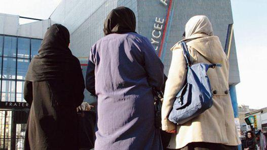

La quasi-totalité de la classe politique française fait preuve d’un sidérant aveuglement en refusant de comprendre le caractère impérialiste de l’islam(isme). Même l’aggravation de la persécution des Chrétiens en Orient ne leur ouvre pas les yeux sur sa stratégie de conquête.
Il est devenu difficile de discuter des ambitions politiques de l’islam sans être immédiatement dénoncé, dans un réflexe pavlovien, comme islamophobe. Quiconque émettant un doute sur la compatibilité de l’islam(isme) avec l’identité de la France est instantanément mis au ban de la catégorie des êtres pensants. Et pourtant. Le redoublement des attentats et du massacre des chrétiens1 ont rendu (encore plus) nécessaire la réflexion sur le contenu religieux, la nature politique et l’ambition sociale de l’islam2.
1. ORGUEIL ET CÉCITÉ
Pourquoi la quasi-totalité de la classe politique française s’entête-t-elle à proclamer évidente, d’un côté, l’hétérogénéité de l’islam et de l’islamisme et, de l’autre, la compatibilité du premier avec la République et non, d’ailleurs, avec la culture française ? Plusieurs raisons sont identifiables. Sans doute, certains hommes politiques entendent-ils sincèrement éviter la stigmatisation des musulmans qui restent a priori pacifiques. D’autres, plus cyniques, cherchent certainement à protéger des intérêts électoraux et à conserver (mais pour combien de temps ?) la paix sociale en abdiquant la culture autochtone et la puissance publique en certains lieux abandonnés à des organisations soit criminelles soit d’embrigadement religieux3. Plus stratèges, certains font preuve de davantage de prudence : sachant qu’il existe des territoires en quasi-sécession, il faudrait éviter, avant que des mesures fermes ne puissent être prises, la conscientisation et la coagulation de la masse musulmane encore divisée (tant pour des raisons de divergences doctrinales que de diversité ethnique des croyants) en plusieurs sensibilités.
Cependant, c’est avant tout l’orgueil qui conduit l’essentiel des élus à une stupéfiante cécité mentale se manifestant par le refus obstiné de voir le caractère impérialiste de l’islam(isme). C’est le syndrome Roubachof, du nom du héros du Zéro et l’infini d’Arthur Koestler4 : ils ne peuvent changer de politique d’immigration, reconnaître que les sociétés multiculturelles sont hyper-conflictuelles et que l’assimilation des immigrés (leur conversion à la culture française) n’a pas été poursuivie, sans implicitement avouer que, depuis des décennies, ils se sont trompés ou ont menti aux Français.
Les voici conduits à faire de la surenchère. Ayant une foi aveugle dans le creuset républicain, ils sont prêts à tenter de dissimuler encore, après des naturalisations massives, le remplacement démographique en le disséminant sur l’ensemble du territoire, la mixité culturelle devenant la norme partout. Et honte aux récalcitrants : ce ne seraient que des racistes.
Analysant l’islam à l’aune de leurs critères et non des siens, plaquant sur l’objet étudié des principes qui lui sont exogènes, les hommes politiques se condamnent à ne pas comprendre son ontologie. C’est ainsi qu’ils réduisent l’islam à une foi individuelle, évacuant sa nature politico-juridique ; ils en concluent que, circonscrit à la sphère privée, il est soluble dans n’importe quelle société.
À cela s’ajoute une convergence intellectuelle formelle. Islamistes et « Républicains » ne s’accordent pas a priori sur les dispositions de la loi.
Mais ils partagent la même conception quant à sa force déontique : il faut lui obéir non parce qu’elle permet de réaliser le bien mais parce qu’elle est un commandement, l’expression de la volonté supposée de la puissance supérieure. Dans ce schéma, fort éloigné de la tradition classique occidentale, la soumission à la loi est bonne par principe5. Il est donc techniquement possible de collaborer comme l'anticipe Michel Houellebecq dans son roman Soumission6.
2. LE BON, LA BRUTE ET LE MÉCRÉANT
Tariq RamadanPas de confusion entre le bon musulman et la brute islamiste ; autrement dit : « pas d’amalgame » ! Cette revendication aux accents de sincérité d’une poignée de personnes de croyance musulmane, relayée avec enthousiasme par nombre de non-musulmans, a toutes les caractéristiques de la pétition de principe. Il s’agirait, là, d’une telle évidence qu’elle devrait être hors de portée de la discussion.
Or, c’est bien là que le bât blesse. Car si ce slogan s’appuie sur une constatation indubitablement exacte et socialement vérifiable – il existe une différence de conduite entre le modéré et l’extrémiste –, elle élude la question centrale permettant la compréhension globale de l’enjeu (étant entendu que c’est le phénomène social de l’islam qui est, ici, visé et non la foi de la personne) : celle de l’objectif poursuivi et des moyens mis en œuvre à cette fin.
Est-il possible d’induire d’une différence de degré dans la méthode entre l’auto-proclamé bon et l’assumé brute, une distinction de nature politique de leurs religions ? Pour répondre par l’affirmative, encore faudrait-il que soit précisément établis la frontière entre le « gentil » musulman et le « méchant » islamiste, le ou les critères de discrimination. Or, la réponse se fait d’autant plus attendre que c’est parmi les « bons » que se recrute la cinquième colonne des « brutes ». En outre, la distinction entre un prétendu véritable islam (ouvert au progrès) et sa forme archaïque (présentée comme dévoyée) ne résout pas la question de l’imprécision voire de l’impossibilité d’établir une délimitation. De quel côté faut-il placer, par exemple, la pratique, a priori pacifique mais non moins provocatrice, des prières publiques ?
Se pourrait-il, alors, que la distance dans les conduites ne s’explique nullement par des prescriptions et des croyances différentes mais en raison d’une adaptation des protagonistes aux circonstances (lieux et rapports de force) auxquelles ils sont confrontés ? D’aucuns considèrent que les trois étapes de la stratégie de conquête politico-religieuse de l’islam (dont l’ambition est attestée par l’histoire) sont clairement identifiées.
Premièrement, s’implanter dans une société en revendiquant un droit à l’indifférence, tout accroc à l’égalité « égalitariste » étant accusé d’être une illégitime discrimination, toute critique étant dénoncée comme une agression. Il s’agit d’instrumentaliser la victimisation et de culpabiliser la société d’accueil. Deuxièmement, subvertir l’ordre de celle-ci en obtenant des droits différents (communautarisme). Dans cette phase, l’islam est encore trop faible pour vaincre mais assez puissant pour prendre possession d’une partie de l’espace public (vêtements, menus, horaires). Il s’agit de gagner du terrain : c’est la tactique du grignotage visant à tester la force de résistance des institutions du lieu7. Ne pas accéder à ces revendications de droits particuliers serait le signe d’une persécution ne serait-ce que larvée. Troisièmement, imposer sa domination politique et un droit différent quand le rapport de force (militaire, démographique, culturel, etc.) lui est devenu favorable. Alors, l’islam combat ouvertement tout ce qui ne lui fait pas allégeance (le mécréant étant, au mieux, soumis à un statut le mettant dans une situation d’infériorité juridique et de soumission sociale8).
Islams « modéré » et « rigoriste » ne divergent pas dans leurs finalités mais se distinguent en raison des situations socialement différentes dans lesquels ils sont placés : le premier est minoritaire et donc conciliant, le second est dominant et donc dominateur. Dans ces conditions, il est naturel que le mécréant soit enclin à suspecter la dissimulation du loup islamiste sous les traits de la brebis musulmane. Comment pourrait-il croire que l’islam est une religion capable de tolérance quand celui-ci n’hésite pas à revendiquer pour lui, en Occident, les libertés collective de prosélytisme et individuelle de conversion qu’il refuse aux autres religions dans les territoires qu’il contrôle ? Le non-respect de la plus élémentaire des réciprocités de traitement (par exemple pour la construction des lieux de culte) lui donne le sentiment amer d’une déloyauté et d’un jeu de dupes.
EN GUISE DE CONCLUSION : LA POLITIQUE DE L’AUTRUCHE
La cohabitation dans une même société de plusieurs religions concurrentes9 – et dont les dogmes sont susceptibles d’être incompatibles – est compliquée par le fait que celles-ci peuvent ne pas prescrire les mêmes conduites à leurs fidèles. Or, quand la loyauté fait défaut (si la dissimulation voire le mensonge délibéré sont autorisés), quand la réciprocité (dans l’exercice du culte ou la liberté de la conversion10) n’est pas pratiquée, quand l’usage de la force est permise (non pas seulement par légitime défense mais comme instrument de conquête), aucune relation de confiance n’est véritablement possible11.
L’ordre social est alors traversé par des rapports de force où la paix devient fragile.
S’auto-rassurant, la plupart des hommes politiques comptent sur l’islam modéré pour vaincre sa version radicale. Ils refusent d’envisager que cette distinction n’est recevable qu’en termes de moyens et non de fin.
Car, toutes les formes de l’islam ont un même objectif : la conquête. L’hostilité de l’islam envers l’Occident n’est pas le résultat de l’actuel matérialisme d’une (grande) partie de la population de ce dernier.
Son expansion militaire a commencé dès son origine, au VIIe siècle (tentative de prise de Jérusalem dès 614), à une époque où la civilisation chrétienne du pourtour méditerranéen ne pratiquait pas le culte de l’argent.
L’animosité des islamistes ne vise pas uniquement, parce qu’elle les briderait, la laïcité : les Chrétiens d’Orient et d’Afrique convertis de force, réduits en esclavage ou massacrés, n’en sont pas les thuriféraires. Qu’il soit hard (guerre militaire) ou soft (guerre culturelle), le djihad vise le règne, à terme, de la charia12. L’islam n’a jamais eu pour but de coexister pacifiquement avec les autres religions mais de s’y substituer13.
G.B.
1Sur l’État islamique : O. Hanne, Th. Flichy de La Neuville, L'État islamique, Anatomie du nouveau Califat, Paris, Giovanangeli, 2014 ; S. Laurent, L’État Islamique, Paris, Seuil, 2014 ; du même : Al-Qaïda en France, Paris, Seuil, 2014 ; P.-J. Luizard, Le piège Daech, Paris, La Découverte, 2015. Sur les « filières » djihadistes : A. Erelle, Dans la peau d'une djihadiste, Paris, Robert Laffont, 2015 ; D. Thomson, Les Français jihadistes, Paris, Les Arènes, 2014. Sur la « radication » d’une partie de la population vivant en France : A. Mendel, La France djihadiste, Paris, Ring, 2016.
2Pour une présentation du personnage plus ou moins mythique de Mahomet, cf. : O. Hanne, Mahomet, Le lecteur divin, Paris, Belin, 2013. Sur la question du texte du Coran, il est possible de consulter des analyses « iconoclastes » : Br. Bonnet-Eymard, trad. et comment., Le Coran, Saint-Parres-Lès-Vaudes, CRC, 1988 s. : t. I, Sourates 1-2, 1988 ; t. II, Sourate 3, 1990 ; t. III, Sourates IV et V, 1997 : cette étude propose de considérer la langue originelle du Coran (sans signes diacritiques) comme un dérivé de l’hébreu et de l’araméen ; J.-J. Walter, Le Coran révélé par la théorie des codes, Versailles, Éditions de Paris, 2014 : l’auteur a passé le texte du Coran au crible de l’analyse des données textuelles, ce qui lui permet d’affirmer qu’il a été rédigé par au moins une trentaine d’auteurs. Sur la pensée arabo-musulmane, cf. : D. Urvoy, Histoire de la pensée arabe et islamique, Paris, Seuil, 2006 ; du même : Averroès, Les ambitions d’un intellectuel musulman, Paris, Flammarion, 2008 ; D. Urvoy, M.-Th. Urvoy, Les mots de l’islam, Toulouse, Presses universitaires du Mirail, 2004 ; des mêmes : L'action psychologique dans le Coran, Paris, Cerf, 2007.
3C. Pina, Silence coupable, Paris, Kero, 2016 ; J. Véliocas, Ces maires qui courtisent l’islamisme, Paris, Tatamis éditions, 2e éd., 2015.
4A. Koestler, Le zéro et l’infini [1945 pour la trd. fra.], Paris, Le livre de poche, 1974.
5Sur la question de l’articulation de la religion et du droit, cf. : M.-Th. Urvoy, dir., Islam et christianisme, Éthique et politique, Versailles, Éditions de Paris, 2010 ; M.-Th. Urvoy, dir., Christianisme et islam, Foi et loi, Versailles, Éditions de Paris, 2010 ; M.-Th. Urvoy, dir., Éthique et religion au défi de l’histoire, Versailles, Éditions de Paris, 2011 ; M.-Th. Urvoy, dir., La morale au crible des religions, Versailles, Éditions de Paris, 2013 ; J. Bourlard, éd., Le Jihâd, Les textes fondateurs de l’islam face à la modernité, Versailles, Éditions de Paris, 2008, 2e éd., 2015.
7Il est possible de consulter le témoignange suivant : G. Smith, Rue Jean-Pierre Timbaud, Une vie de famille entre bobos et barbus, Paris, Stock, 2016.
8Sur la dhimmitude et la persécurtion des chrétiens, cf. notamment : A. Laurent, Les chrétiens d’Orient vont-ils disparaître ?, Paris, Salvator, 2008 ; M.-Th. Urvoy, G. Gobillot, dir., L’Orient chrétien dans l’empire musulman, Versailles, Éditions de Paris, 2005 ; M.-Th. Urvoy, dir., Les Chrétiens d’Orient, Histoire et identité, Versailles, Éditions de Paris, 2014.
9Sur la question du multiculturalisme, cf. notamment : M.-Th. Urvoy, G. Gobillot, dir., Pluralisme religieux, Quelle âme pour l’Europe ?, Versailles, Éditions de Paris, 2007.
10Sur ce sujet, cf. not. J. Fadelle, Le prix à payer [2010], Paris, Pocket, 2011 ; M.-Th. Urvoy, dir., Liberté religieuse et éthique civique, Versailles, Éditions de Paris, 2012.
11Sur le dialogue interreligieux et les profondes divergences entre christianisme et islam, cf. : É.-M. Gallez, Le malentendu islamo-chrétien, Repenser le dialogue, Paris, Salvator, 2012 ; A. Laurent, L'islam peut-il rendre l'homme heureux ?, Perpignan, Artège, 2012 ; A. Moussali, Judaïsme, christianisme et Islam, Étude comparée, Versailles, Éditions de Paris, 2000 ; du même : Musulmans, juifs et chrétiens au feu de la foi, Versailles, Éditions de Paris, 2005 et La croix et le croissant, Le christianisme face à l’islam, Versailles, Éditions de Paris, 2005 ; G. Pagès, Interroger l'Islam, Éléments pour le dialogue islamo-chrétien, Poitiers, DMM, 2e éd., 2014 ; D. Urvoy, M.-Th. Urvoy, La mésentente, Un dictionnaire des difficultés doctrinales du dialogue islamo-chrétien, Paris, Cerf, 2014.
12Sur l’agression de la chrétienté par l’islam, cf. not. : Y. de Crussol, dir., Islam et Occident, Rencontre et conflits, Versailles, Éditions de Paris, 2008 ; H.-O. Luthe, M.-Th. Urvoy, dir., Relations islamo-chrétienne, Bilan et perspectives, Versailles, Éditions de Paris, 2006.
13Sur l’ambition politique de l’islam(isme), cf. : A. Boulaabi, Islam et pouvoir, Les finalités de la Charia et la légitimité du pouvoir, Paris, L’Harmattan, 2006 ; Ph. d’Iribarne, L'islam devant la démocratie, Paris, Gallimard, 2013 ; A. del Valle, Le totalitarisme islamiste à l'assaut des démocraties, Genève, Éditions des Syrtes, 2002 ; H. Zanaz, L'islamisme, vrai visage de l'islam, Paris, Les éditions de Paris-Max Chaleil, 2012 et Islamisme, Comment l'Occident creuse sa tombe, Paris, Les éditions de Paris-Max Chaleil, 2013.

Partager cette page